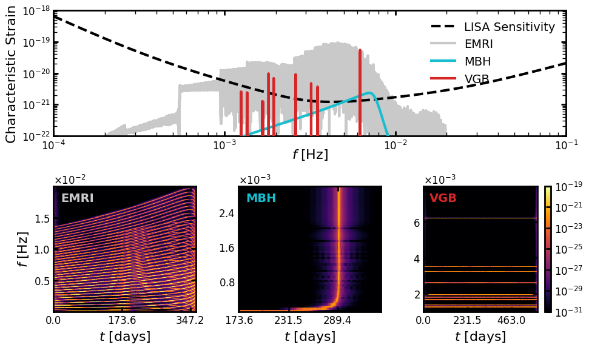
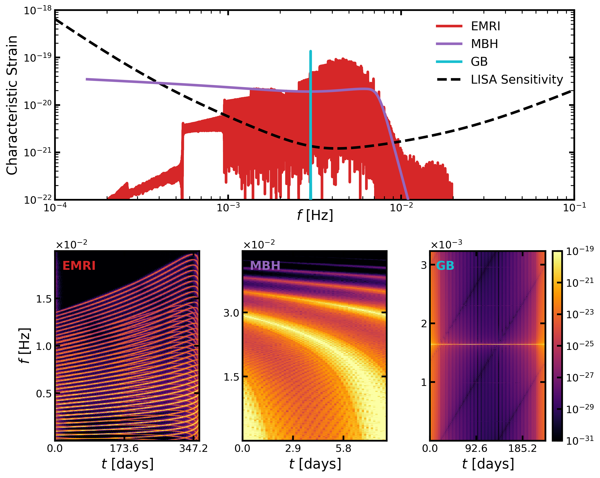

EMRI, Galactic Binary, and MBH Transformation examples#
We generate the signals using the fastemriwaveforms, bbhx and gbbgpu packages.
The signals are saved to an HDF5 file.
Alternatively, you can use data from the LISA Data Challenge.
Show code cell source
Hide code cell source
## Installations (uncomment and run)
# !apt-get install liblapacke-dev libgsl-dev
# !ln -s /usr/lib/x86_64-linux-gnu/libhdf5_serial_hl.so /usr/lib/x86_64-linux-gnu/libhdf5_hl.so
# !ln -s /usr/lib/x86_64-linux-gnu/libhdf5_serial.so /usr/lib/x86_64-linux-gnu/libhdf5.so
# !pip install fastemriwaveforms lisaanalysistools bbhx gbgpu h5py pywavelet
Show code cell source
Hide code cell source
import numpy as np
import h5py
import warnings
from typing import Tuple
import os
import scipy
from scipy.signal.windows import tukey
warnings.filterwarnings("ignore")
S_DAY = 60 * 60 * 24 # seconds in a day
N = 2**18
DATA_FILE = "data.h5"
RADLER_DATASETS = dict(
MBH="LDC1-1_MBHB_v1_1_FD_noiseless.hdf5",
EMRI="LDC1-2_EMRI_v1_noiseless.hdf5",
VGB="LDC1-3_VGB_v1_FD_noiseless.hdf5",
)
def generate_emri(fname="EMRI.h5") -> Tuple[np.ndarray, np.ndarray]:
"""
Generate an EMRI frequency domain waveform.
Returns:
Tuple[np.ndarray, np.ndarray]: (frequency array, waveform)
"""
from few.waveform import GenerateEMRIWaveform
from few.trajectory.inspiral import EMRIInspiral
from few.utils.utility import get_p_at_t
# EMRI parameters
Tobs = 1.0 # observation time
dt = 10.0 # time interval
eps = 0 # mode content percentage
M = 1e6 # central object mass
mu = 10.0 # secondary object mass
e0 = 0.6 # eccentricity
a = 0.1 # spin parameter (ignored for Schwarzschild)
x0 = 1.0 # ignored in Schwarzschild waveform
# Angles and phases (all in radians)
qS = np.pi / 3
phiS = np.pi / 3
qK = np.pi / 3
phiK = np.pi / 3
Phi_phi0 = np.pi / 3
Phi_theta0 = 0.0
Phi_r0 = np.pi / 3
dist = 1.0
# Common waveform kwargs
waveform_kwargs = {"T": Tobs, "dt": dt, "eps": eps}
# Compute the initial semi-latus rectum (p0)
traj_module = EMRIInspiral(func="SchwarzEccFlux")
p0 = get_p_at_t(
traj_module,
Tobs * 0.99,
[M, mu, 0.0, e0, 1.0],
index_of_p=3,
index_of_a=2,
index_of_e=4,
index_of_x=5,
traj_kwargs={},
xtol=2e-12,
rtol=8.881784197001252e-16,
bounds=None,
)
# Injection parameters:
# [M, mu, a, p0, e0, x0, dist, qS, phiS, qK, phiK, Phi_phi0, Phi_theta0, Phi_r0]
emri_injection_params = [
M,
mu,
a,
p0,
e0,
x0,
dist,
qS,
phiS,
qK,
phiK,
Phi_phi0,
Phi_theta0,
Phi_r0,
]
# Create a time-domain generator to get the correct FFT grid.
td_gen = GenerateEMRIWaveform(
"FastSchwarzschildEccentricFlux",
sum_kwargs=dict(pad_output=False, odd_len=True),
return_list=True,
)
h_td = td_gen(*emri_injection_params, **waveform_kwargs)[
0
] # get + polarization
h_fd = np.fft.fftshift(np.fft.fft(h_td)) * dt
N = len(h_td)
freq_all = np.fft.fftshift(np.fft.fftfreq(N, dt))
positive_mask = freq_all >= 0.0
freq = freq_all[positive_mask]
hf_fd = h_fd[positive_mask] # Grab only +ve frequencies
# save EMRI data
with h5py.File(fname, "a") as f:
grp = f.create_group("EMRI")
grp.create_dataset("freq", data=freq)
grp.create_dataset("hf", data=hf_fd)
def generate_gb(fname) -> Tuple[np.ndarray, np.ndarray]:
"""
Generate a Galactic Binary signal.
Returns:
Tuple[np.ndarray, np.ndarray]: (frequency array, waveform)
"""
from gbgpu.gbgpu import GBGPU
from lisatools.utils.constants import YRSID_SI
gb = GBGPU()
# Galactic Binary parameters
amp = 2e-23 # amplitude
f0 = 3e-3 # initial frequency
fdot = 7.538331e-18
fddot = 0.0
phi0 = 0.1 # initial phase
inc = 0.2 # inclination
psi = 0.3 # polarization angle
lam = 0.4 # ecliptic longitude
beta = 0.5 # ecliptic latitude
gb.run_wave(amp, f0, fdot, fddot, phi0, inc, psi, lam, beta, N=2**16)
f, hf = gb.freqs[0], gb.A[0] # A --> A channel
with h5py.File(fname, "a") as f_out:
grp = f_out.create_group("GB")
grp.create_dataset("freq", data=f)
grp.create_dataset("hf", data=hf)
def generate_mbh(fname) -> Tuple[np.ndarray, np.ndarray]:
"""
Generate an MBH (massive black hole) waveform.
Returns:
Tuple[np.ndarray, np.ndarray]: (frequency array, waveform)
"""
from bbhx.waveforms.phenomhm import PhenomHMAmpPhase
from lisatools.utils.constants import PC_SI
wave_gen = PhenomHMAmpPhase()
# MBH parameters
m1 = 2e6
m2 = 7e5
chi1 = 0.5
chi2 = 0.7
dist = 3000 * 1e9 * PC_SI
phi_ref = 0.6
f_ref = 0.0
t_ref = 1e6 # seconds
length = 2**16
wave_gen(m1, m2, chi1, chi2, dist, phi_ref, f_ref, t_ref, length)
fd = wave_gen.amp[0, 0] * np.exp(
1j * -wave_gen.phase[0, 0]
) # grabbing [(2,2), +pol]
freq = wave_gen.freqs_shaped[0, 0]
with h5py.File(fname, "a") as f_out:
grp = f_out.create_group("MBH")
grp.create_dataset("freq", data=freq)
grp.create_dataset("hf", data=fd)
def load_radler_data(key, fname):
from pywavelet.types import TimeSeries
load_fname = f"radler/{RADLER_DATASETS[key]}"
with h5py.File(load_fname, "r") as f:
tdi_data = f["H5LISA/PreProcess/TDIdata"][:]
t, x, y, z = tdi_data.T
ts = TimeSeries(data=x, time=t)
fd = ts.to_frequencyseries()
with h5py.File(fname, "a") as f_out:
grp = f_out.create_group(key)
grp.create_dataset("freq", data=fd.freq)
grp.create_dataset("hf", data=fd.data)
def main():
if not os.path.exists(DATA_FILE):
# Generate signals
generate_emri(DATA_FILE)
if not os.path.exists("radler"):
generate_gb(DATA_FILE)
generate_mbh(DATA_FILE)
else:
load_radler_data("VGB", DATA_FILE)
load_radler_data("MBH", DATA_FILE)
# print keys in the data file
with h5py.File(DATA_FILE, "r") as f:
print("Available datasets in the data file:")
for key in f.keys():
print(f"- {key}")
if __name__ == "__main__":
main()
Available datasets in the data file:
- EMRI
- MBH
- VGB
Next we load the data, compute the WDM transforms and plot the results.
Show code cell source
Hide code cell source
import h5py
import numpy as np
from lisatools.sensitivity import get_sensitivity
from pywavelet.types import FrequencySeries, Wavelet, TimeSeries
from dataclasses import dataclass
from typing import Dict
import matplotlib.gridspec as gridspec
from matplotlib.colors import LogNorm
from matplotlib.ticker import ScalarFormatter
import matplotlib.pyplot as plt
# Set the desired RC parameters
rc_params = {
"xtick.direction": "in", # Mirrored ticks (in and out)
"ytick.direction": "in",
"xtick.top": True, # Show ticks on the top spine
"ytick.right": True, # Show ticks on the right spine
"xtick.major.size": 6, # Length of major ticks
"ytick.major.size": 6,
"xtick.minor.size": 4, # Length of minor ticks
"ytick.minor.size": 4,
"xtick.major.pad": 4, # Padding between tick and label
"ytick.major.pad": 4,
"xtick.minor.pad": 4,
"ytick.minor.pad": 4,
"font.size": 14, # Overall font size
"axes.labelsize": 16, # Font size of axis labels
"axes.titlesize": 18, # Font size of plot title
"xtick.labelsize": 12, # Font size of x-axis tick labels
"ytick.labelsize": 12, # Font size of y-axis tick labels
"xtick.major.width": 2, # Thickness of major ticks
"ytick.major.width": 2, # Thickness of major ticks
"xtick.minor.width": 1, # Thickness of minor ticks
"ytick.minor.width": 1, # Thickness of minor ticks
"lines.linewidth": 3, # Default linewidth for lines in plots
"patch.linewidth": 4, # Default linewidth for patches (e.g., rectangles, circles)
"axes.linewidth": 2, # Default linewidth for the axes spines
}
# Apply the RC parameters globally
plt.rcParams.update(rc_params)
COLORS = dict(MBH="#17becf", EMRI="#c9c9c9", VGB="#d62728")
@dataclass
class PlotData:
freqseries: FrequencySeries
wavelet: Wavelet
label: str
def load_data() -> Dict[str, PlotData]:
"""
Load data from HDF5 files.
Returns:
Tuple[np.ndarray, np.ndarray]: (frequency array, waveform)
"""
# Load the data from the HDF5 file
keys = ["EMRI", "VGB", "MBH"]
data = {}
with h5py.File("data.h5", "r") as f:
for key in keys:
freqseries = FrequencySeries(f[key]["hf"][:], f[key]["freq"][:])
wdm = freqseries.to_wavelet(Nf=1024)
data[key] = PlotData(
freqseries=freqseries, wavelet=wdm, label=key.upper()
)
return data
def generate_plot(data: Dict[str, PlotData]):
# Create figure and gridspec
fig = plt.figure(figsize=(10, 6))
gs = gridspec.GridSpec(
2, 3, figure=fig, height_ratios=[1, 1]
) # 2 rows, 3 columns
# Create subplots
ax0 = fig.add_subplot(gs[0, :]) # Row 1: spans all 3 columns
ax1 = fig.add_subplot(gs[1, 0]) # Row 2, Column 1
ax2 = fig.add_subplot(gs[1, 1]) # Row 2, Column 2
ax3 = fig.add_subplot(gs[1, 2]) # Row 2, Column 3
axs = [ax1, ax2, ax3]
### Plot characteristic strain
f_fixed = np.logspace(-4, -1, 1000)
sensitivity = get_sensitivity(
f_fixed, sens_fn="LISASens", return_type="char_strain"
)
ax0.loglog(
f_fixed, sensitivity, "k--", label="LISA Sensitivity", zorder=-5
)
ax0.set_xlim(1e-4, 1e-1)
ax0.set_ylim(bottom=10**-22, top=10**-18)
# reduce padding for xlabel
ax0.set_xlabel(r"$f$ [Hz]", labelpad=-5)
ax0.set_ylabel(r"Characteristic Strain")
# rearrange data [EMRI, MBH, GB]
data = {k: data[k] for k in ["EMRI", "MBH", "VGB"]}
for k, d in data.items():
f, hf = d.freqseries.freq, d.freqseries.data
zorder = -10 if k == "EMRI" else 10
ax0.loglog(
f[1:],
(np.abs(hf) * f)[1:],
label=f"{d.label}",
color=COLORS[k],
zorder=zorder,
)
ax0.legend(frameon=False)
# ### Plot WDMs (share colorbar)
log_norm = LogNorm(vmin=10**-31, vmax=10**-19)
for i, (k, d) in enumerate(data.items()):
kwgs = dict(
absolute=True,
zscale="log",
cmap="inferno",
ax=axs[i],
norm=log_norm,
show_gridinfo=False,
show_colorbar=False,
)
if i == 2:
kwgs["show_colorbar"] = True
d.wavelet.plot(**kwgs)
axs[i].text(
0.05,
0.95,
d.label,
color=COLORS[k],
transform=axs[i].transAxes,
verticalalignment="top",
# extra bold font
fontweight="bold",
)
if k == "VGB":
axs[i].set_ylim(0.001, 0.008)
elif k == "MBH":
axs[i].set_ylim(0.0001, 0.003)
axs[i].set_xlim(173 * S_DAY, 340 * S_DAY)
ax1.set_ylabel(r"$f$ [Hz]")
ax2.set_ylabel("")
ax3.set_ylabel("")
ax1.set_ylim(top=0.02)
cbar = plt.gca().images[-1].colorbar
# cbar = ax3.collections[0].colorbar
cbar.set_label(r"")
cbar.ax.yaxis.label.set(rotation=0, ha="right", va="bottom")
cbar.ax.yaxis.set_tick_params(rotation=0)
# make yticks only use 2 digits, and use only 3 ticks
for ax in axs:
ax.set_xlabel(r"$t$ [days]")
ax.xaxis.set_major_locator(plt.MaxNLocator(nbins=3))
ax.yaxis.set_major_locator(plt.MaxNLocator(nbins=4, prune="both"))
ax.yaxis.set_major_formatter(ScalarFormatter(useMathText=True))
ax.ticklabel_format(axis="y", style="sci", scilimits=(0, 0))
return fig, axs
data = load_data()
fig, axs = generate_plot(data)
plt.tight_layout()
plt.savefig("example_signals.png", dpi=300, bbox_inches="tight")


fig, axs = generate_plot(data)
plt.tight_layout()
plt.savefig("example_signals.pdf", dpi=300, bbox_inches="tight")